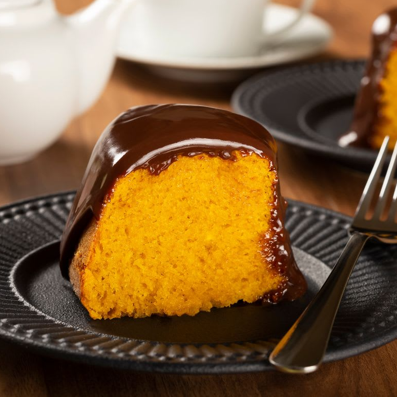

BOLO DE CENOURA

- MASSA
INGREDIENTES
- 3 cenouras médias
- 3 ovos
- 2 xícaras de açúcar
- 1 xícara de óleo de canola
- 2 xícaras de farinha de trigo
- 1 pitada de sal
- 1 colher de sopa de fermento químico
MODO DE FAZER
- No liquidificador, coloque 3 cenouras médias, 3 ovos, 1 xícara de óleo de canola e 2 xícaras de açúcar. Bata até ficar homogêneo.
- Em uma tigela, coloque 2 xícaras de farinha de trigo, 1 pitada de sal e 1 colher de sopa de fermento químico. Misture.
- Em seguida, adicione a mistura do liquidificador na tigela.
- Com um fouet, misture até ficar homogêneo.
- Transfira a massa para uma forma untada e enfarinhada.
- Leve para assar em forno preaquecido a 180 graus Celsius por 40 minutos.
- COBERTURA
INGREDIENTES
- 5 colheres de sopa de açúcar
- 3 colheres de sopa de chocolate em pó
- 2 colheres de sopa de manteiga
- 2 colheres de sopa de leite
MODO DE FAZER
- Em uma panela, coloque 5 colheres de sopa de açúcar, 3 colheres de sopa de chocolate em pó, 2 colheres de sopa de leite e 2 colheres de sopa de manteiga sem sal.
- Mexa e deixe cozinhar até levantar fervura.
- Assim que a mistura soltar do fundo, está pronta a cobertura.
- Espere o bolo esfriar e derrame a calda ainda quente sobre ele.
- Espalhe a cobertura e deixe esfriar antes de servir.